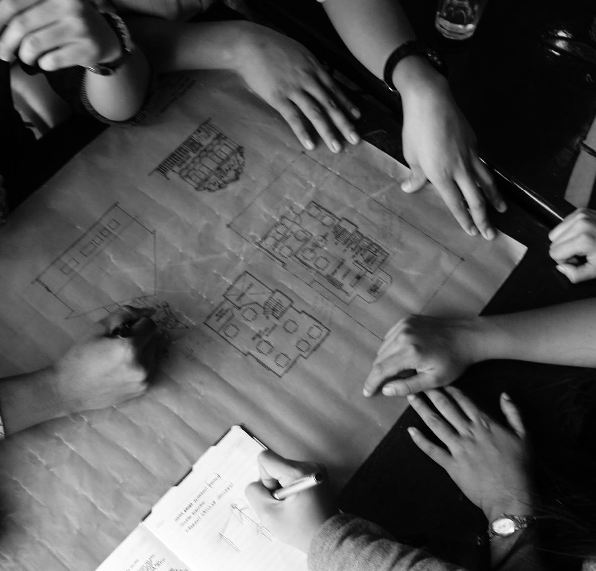
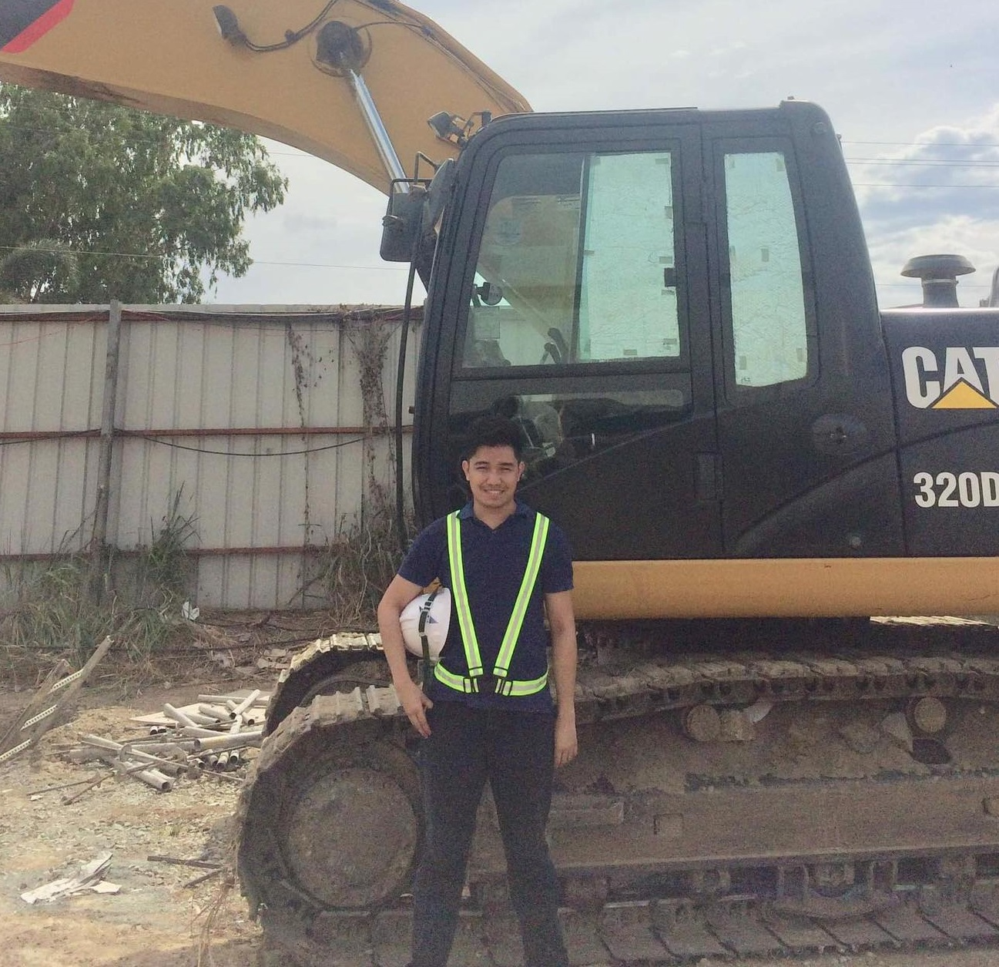
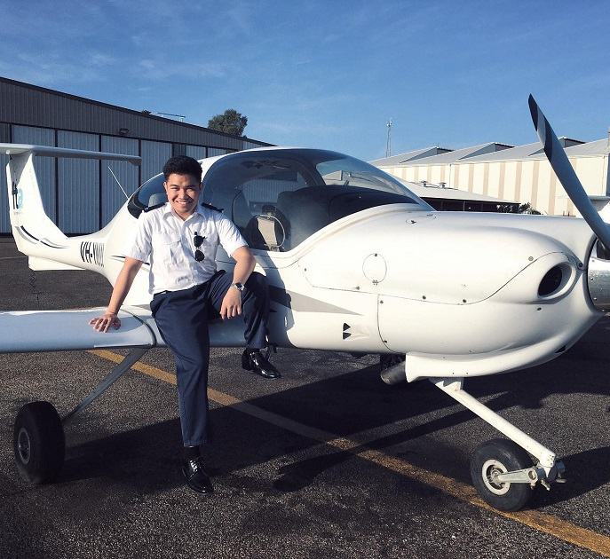

Architectural Design
Conceptualizing User-Oriented approaches
Being an architecture student is a pretty tough role. Preparing design frameworks from its early conception to producing rendered models of residential houses, hospitals and stadiums were all part of our journey. Being creative definitely helped in shaping my perspective on tackling social issues that are linked to architecture (e.g. housing for the poor, accesibility in design, community and road development). The experience was definitely a factor for my future engagements as it helped me both as an individual and a professional.

Site Inspection
Embodying professionalism in the workplace
As part of our college curriculum for the Architecture program, I was exposed to the everyday job of on-site construction works. Commissary plantations and factories covered the majority of my visits. Handling tools and correcting planning errors on print are not as easy as one would think. This allowed me to give great appreciation to the skilled workers that construct our everyday settlements. Overall, engaging with other workers in a professional setup is the main takeaway from the experience.

Aviation Industry
Being a student pilot in an ever-changing environment
I had the opportunity to become a scholar of Cebu Pacific's Cadet Pilot Program. Under this program, we were trained in Adelaide, South Australia to become airline pilots operating their local and international fleets. I was exposed to the intricacies of being pilot-in-command of a four-seater plane from take-off to landing. While not in the air, we study ground school subjects that covered aviation theories. It was an amazing experience that can top no other.